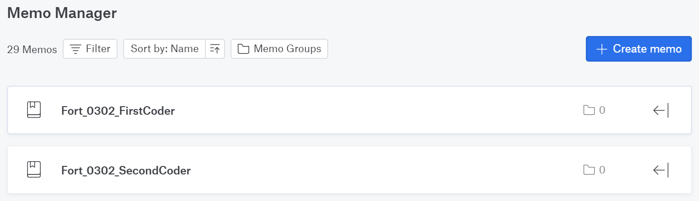
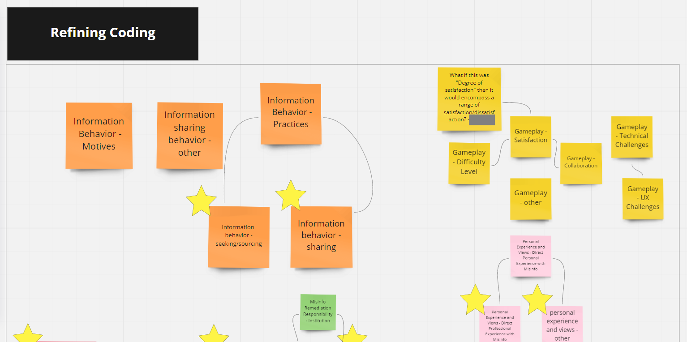
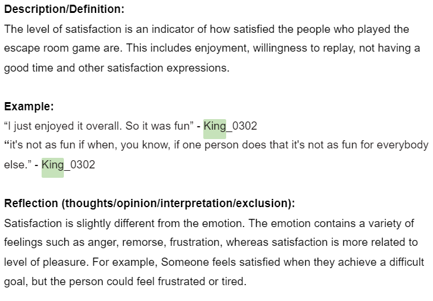
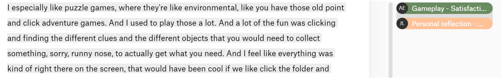
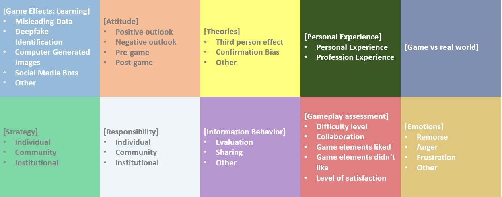
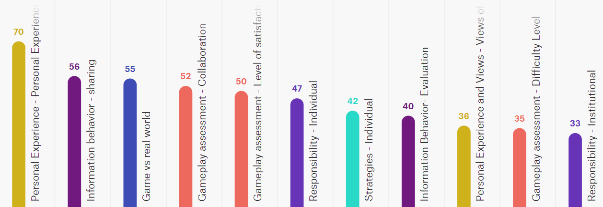
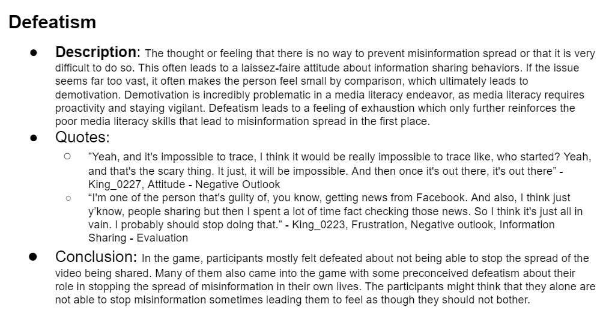
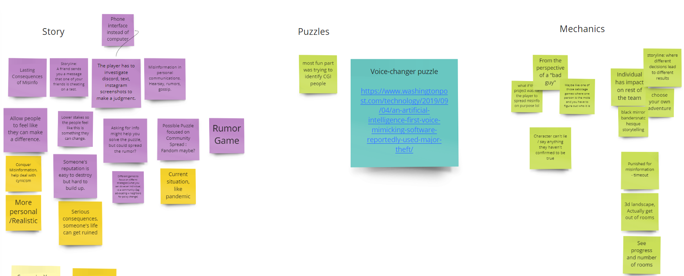

This project is an ongoing collaboration between a few research groups, including the Technology and Social Social Change Group. This project involves an escape-room style game where players have to figure out if a supplement called Euphorigin is safe.
The team for this stage of the project was responsible for the qualitative analysis of the debriefing interviews for groups after playing the game. After coding the transcripts/videos, we went through two iterations of the codes. We cross-evaluated codes with one other person for each interview as well. Once the codes were finalized, we curated different themes for the responses seen in the interviews, along with new puzzle ideas.
We started by assigning two coders to each interview. By the time I joined the group, the initial codes were already decided. For each interview coded, we also had to create an analytical memo describing the main points of the participants' responses.
In Atlas.ti, we had a transcript where we could code the responses. After this first coding process, we refined the codes. Some codes were made as subcategories for others and we created new, more applicable codes for the participants' thoughts. To apply more psychological theories to the codes, some team members also reviewed different literature and research papers. Some theories we ended up using from this were Third person effect (vulnerability) and Confirmation bias (e.g., believing the company was evil).
Once the codes were refined, we created a more descriptive codebook, showing examples and reflections on what the codes meant for how the participants learned/felt about misinformation. Along with this, it could help us understand which parts of the game should change.
We went through a second refinement, though this one was only for a few codes we were not sure about. This was for any codes we thought were too broad and adding some codes we still felt like were missing. This happened in tandem with intermediate coding, where each person who coded a certain interview needed to agree on which codes to use.
Final codes
The most popular codes had to do with participants talking about their experiences dealing with misinformation. They also talked about how they decide what to share, such as checking other sources or researching who posted/said something. There were also a lot of codes used for the gameplay, like how much they liked the game and how they collaborated to solve the escape room.
With our teammates we decided on different themes to determine how to write a paper about the study, as well as deciding on changes to make for the second escape room. We thought about three different themes, along with a description, examples, and conclusion for each one. The first was Defeatism. This had to do with participants feeling exhausted or overwhelmed by misinformation, which seems to start a cycle of low media literacy since it can deter them from trying to become more media literate. One example used by a participant is how misinformation can be hard to trace, especially once it gains traction and many people are sharing it. The second theme was Learning from personal experiences. With this, participants would talk about how they felt remorseful about something they shared or how their information sharing habits changed because of misinformation. This would make participants employ strategies to verify information. The last theme we curated was Degree of consequence. This meant that there can be more or less consequences depending on who shared the information and what that information is about. For example, an influencer sharing misinformation about supplements would be more harmful than a non-famous person saying to their friends that they broke a world record. Likes and shares can still be risky though, because they can affect the timeline and recommendations for users.
After considering all the responses and codes, we brainstormed new puzzle ideas and escape room themes. We were unsure about whether to go with something more serious since it could cause some cynicism, but if we go with something more fantasy it may not achieve a similar level of information literacy. Some ideas we also thought about included a game where the participant is playing as bad people spreading misinformation, disinformation, and adding a new a voice-changing puzzle since only deep fakes and computer-generated images were used.
The first iteration of the escape room helped us understand what kind of misinformation our participants have dealt with as well as how effective the game was in helping them understand misinformation. Though the game was not very effective for educating, because participants mentioned they would not change their information sharing behavior and some mentioned they might not remember the game after, we still obtained valuable information to help us understand current misinformation attitudes and how to make a more effective game.